The legislative election of 18 May 2025 — do the numbers add up?
These tests found no clear sign of manipulation
The same votes can give different winners under different rules
PS finished 4,313 votes ahead of CH — and 2 seats behind (58 vs 60)
If each area gave one win to its leading party, AD’s 33% of votes would give it 69–76% of the wins
What was decided on 18 May 2025
Portugal held an early election for its 230-seat parliament. The centre-right alliance AD won 32.7%, ahead of the Socialist Party (23.4%) and Chega (22.6%). Turnout was 64.4%: 5.97 million ballots were cast.
Results from 3,092 parishes — overseas voters excluded
The official parish data leave out the overseas voting district, with about 1.6 million registered voters. The percentages above include blank and invalid ballots.
Same votes, different rules — different results
I checked how the rules affect the result by counting the same votes in different ways: one national district, one winner per area, and different party alliances. I also looked at the two-round presidential election. These examples show how electoral rules can change who wins.
PS and CH change places under different rules
PS led CH nationally by 4,313 votes (23.81% vs 23.74%), but won 2 fewer seats: 58 against 60. That is the result of dividing seats across Portugal’s 22 districts using the D’Hondt formula. A single national district would give each 56 seats. Counting one win per parish puts PS ahead, 429 to 309. Counting one win per municipality puts CH ahead, 67 to 34.
Party alliances can shift more than 60 seats
I kept every vote and changed which parties ran together. AD and CH together would get 154 seats, enough for a constitutional majority. Five left-wing parties together, with 34.1% of the votes, would get 84 seats, ahead of AD’s 81. Splitting AD as in 2022 would cost it 4 seats, going to PS and CH. These are calculations with fixed votes, not predictions of how voters would behave.
A local winner can have less than half the votes
In local elections, the list with the most votes wins, even below 50%. In October 2025, 142 of 308 winning lists had less than half the votes. In 49 municipalities, parties on the opposing side together had more votes than the winner. In Lisboa, the winner had 42.8% and the opposing parties together had 45.2%.
Rule 1 · Count seats nationally or wins by area?
Portugal divides 230 seats across 22 districts using D’Hondt, a formula for sharing seats among party lists. There is no extra national allocation or bonus for the winner. Here are the same votes counted four ways:
| List | National votes | D'Hondt seats (actual) | One national district | Municipality wins (simulation) | Parish wins (simulation) |
|---|---|---|---|---|---|
| AD | 33.2% | 91 | 78 | 224 / 325 | 2,343 / 3,092 |
| PS | 23.8% · leads | 58 | 56 | 34 / 325 | 429 / 3,092 |
| CH | 23.7% | 60 · leads | 56 | 67 / 325 | 309 / 3,092 |
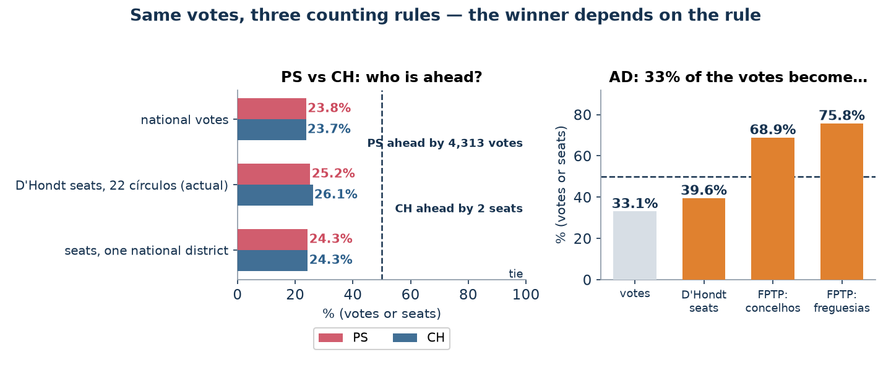
Rule 2 · Parties running together or separately
In medium-sized districts, D’Hondt can give parties more seats if they run together. I combined or split lists, kept the votes fixed, and calculated the seats again:
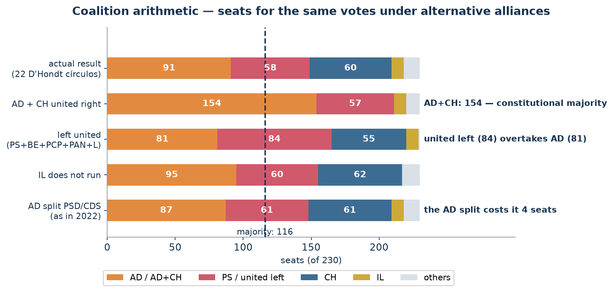
Rule 3 · The local list with the most votes wins
In the local elections of 12.10.2025, 142 of 308 winners had less than 50% of the votes. In 49 municipalities, parties on the opposing side together had more votes than the winner. This shows how splitting votes between lists can matter; it does not show that those voters would support a joint list.
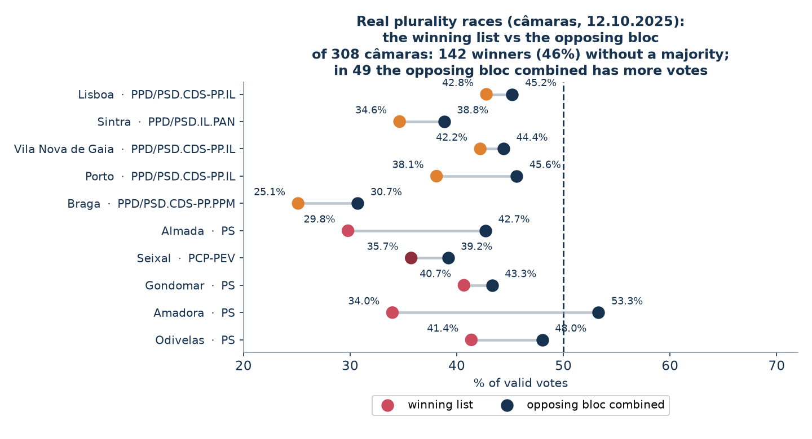
Rule 4 · Only two candidates reach the run-off
In January 2026, only the top two candidates reached the second round. The eliminated centre candidates — Cotrim, Gouveia and Mendes — together had 39.8% of valid votes. A model based on area totals (R² = 0.997) estimates that Cotrim’s voters split 40% to Seguro, 23% to Ventura and 21% to blank or invalid ballots; about 77% of Gouveia’s and Mendes’s voters went to Seguro. Area totals cannot reveal individual choices. Blank ballots almost tripled between rounds.
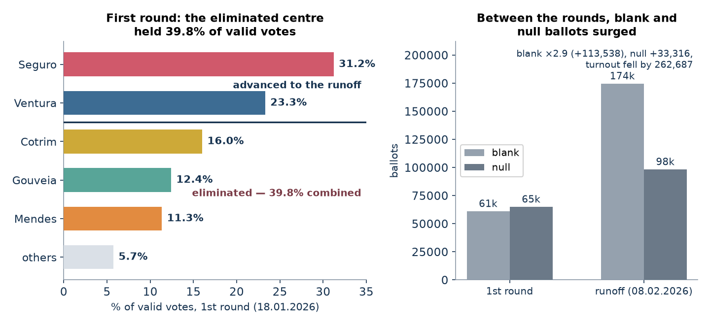
What the checks found
I ran nine groups of checks on the official parish data using code anyone can inspect. Taken together, they do not show a clear pattern of manipulation. The details and limits of each check are below.
Votes in unusually high-turnout areas (Shpilkin)
Above the turnout cutoff, AD has 2,980 votes: 0.15% of its total. Removing that whole zone changes its share from 32.72% to 32.71%. Those votes are not necessarily fraudulent.
The Shpilkin method looks for an unusual extension of the turnout curve, where extra ballots can appear. I set the cutoff at 78.6% using the upper end of the 2022 and 2024 turnout data, rather than choosing it to fit 2025. Above it are 7,779 ballots (0.13% of ballots cast), including 2,980 for AD (0.15% of its total). Removing this entire zone changes AD’s share from 32.72% to 32.71%. A high-turnout vote is not automatically a fraudulent vote.
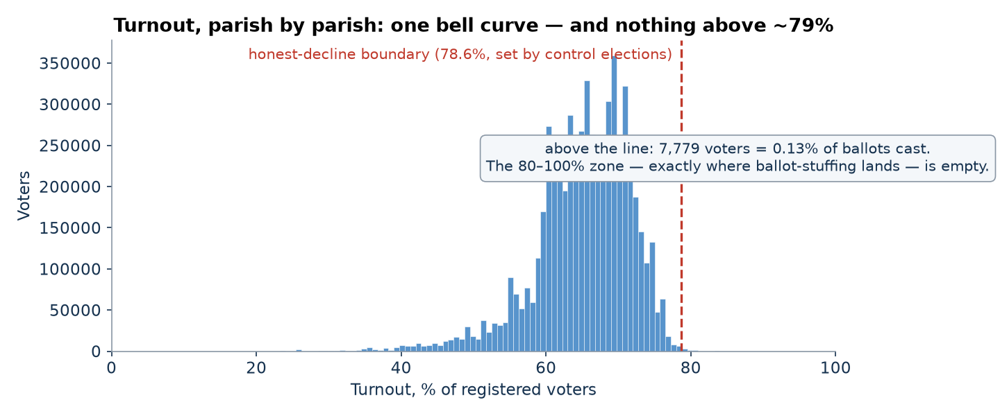
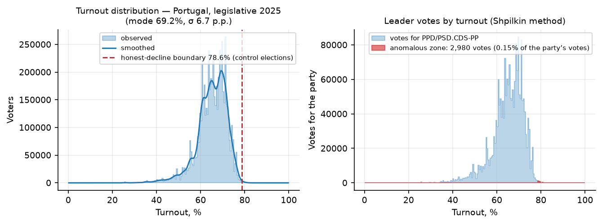
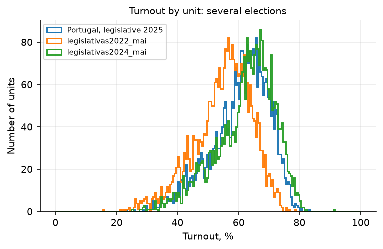
Does AD do better where turnout is higher?
There is no separate group of parishes with both high turnout and a high AD vote share, a pattern that added ballots can create.
Adding ballots for one party can create a “comet tail” on this chart: that party’s vote share rises sharply as turnout rises. AD, PS and CH show no such tail. The weighted correlation for AD is −0.09, close to zero: turnout and AD’s share have little overall relationship.
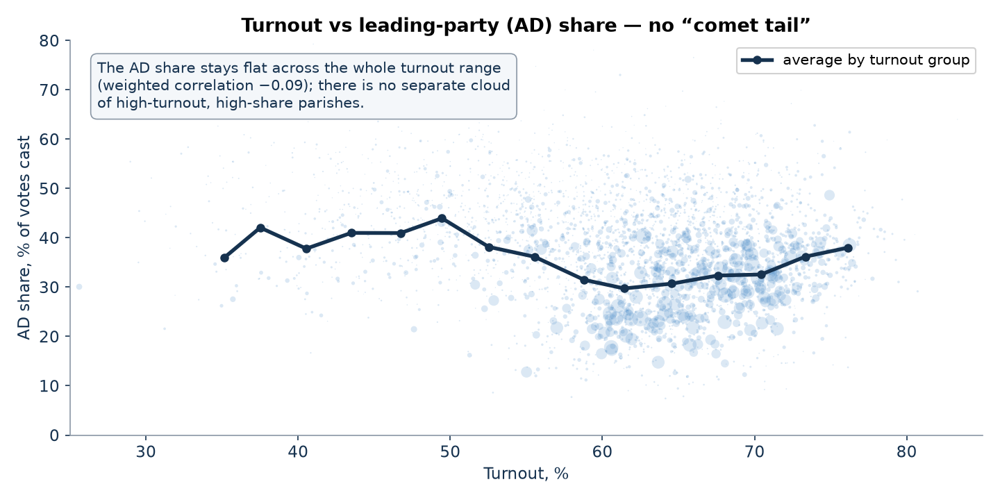
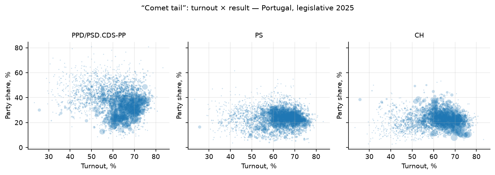
The shape of turnout and vote share (Klimek)
There is no separate group with 80–100% turnout and a high AD share. The groups that do appear follow geography.
The “election fingerprint” method (Klimek et al., PNAS 2012) maps where parishes sit by turnout and AD share. Added ballots can create a second group high on both measures. A model fitting two bell-shaped groups finds centres at (60.0%, 39.7%) and (66.7%, 29.2%). These fit geographical differences between the rural north, the south and cities. Neither is the high-turnout, high-share group sought by this check. The second group has a weight of 0.66.
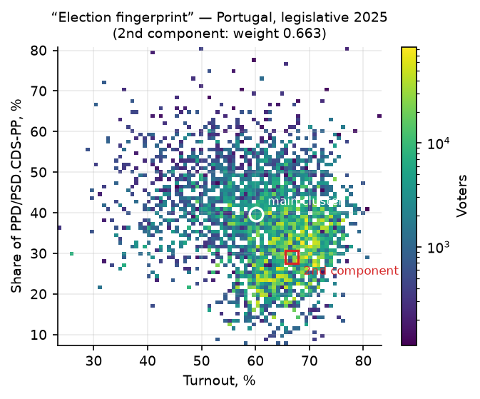
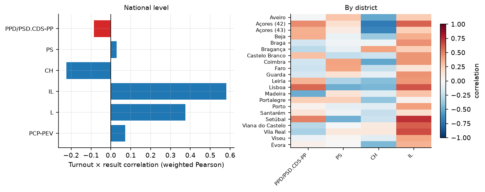
Are round percentages unusually common? (Kobak)
Whole-number turnout percentages appear in 1.46% of parishes, close to the 1.44% expected by chance (z = 0.1). Multiples of 5 and AD’s vote share show no excess either (z between −0.4 and +0.1).
Made-up totals can favour round percentages. I compared how often these occur with random simulations (Monte Carlo). Whole-number turnout appears in 1.46% of parishes, compared with 1.44% expected (z = 0.1). Multiples of 5 show no excess (z = −0.3), nor does AD’s whole-number share (z between −0.4 and +0.1). The z score measures how far the result lies from the simulated average. The self-test below shows how it changes when I deliberately round results.
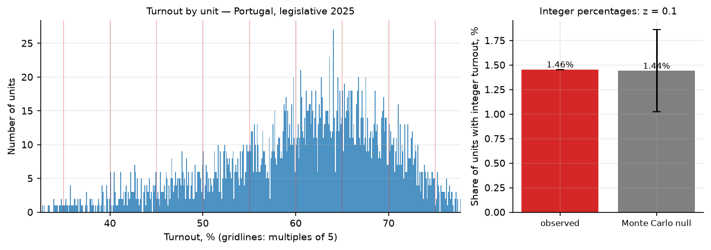
Do the digits in vote totals look unusual?
Of 12 checks, 11 found no unusual difference. AD’s last digits gave p = 0.02 because 4 appeared less often. This result does not remain statistically significant after allowing for all 12 checks.
I checked the second digit against Benford’s expected pattern and the last digit against equal frequencies (Beber–Scacco). These are clues to unusual numbers, not proof of fraud. Of 12 chi-square comparisons for the six largest lists, 11 showed no unusual difference; all Benford p-values were 0.10–0.79. AD’s last-digit result was p = 0.02: digit 4 appeared in 8.2% of counts rather than 10%. There was no excess of endings 0 or 5. The AD result does not remain significant after adjusting for the number of tests.
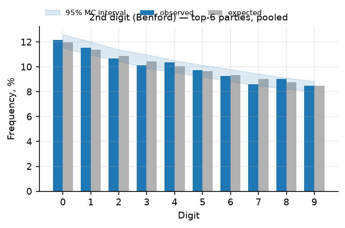
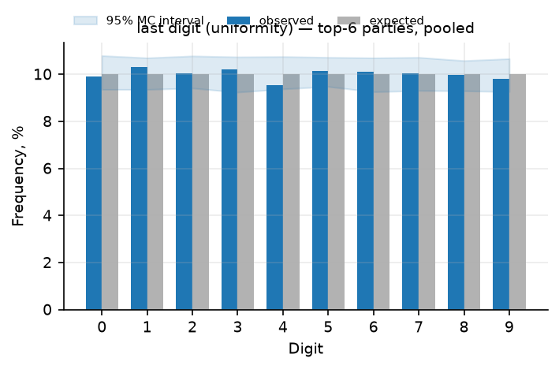
Which parishes differ most from others?
Comparing nearby parishes flagged 81 of 3,092 (2.6%). A computer screen selected 31, the most unusual 1% by design. These are small parishes with differences in several directions, not one shared pattern.
I used two ways to find unusual parishes. One compares a parish with the middle value in its municipality using a robust z-score, which measures how far it differs from neighbours. The other, Isolation Forest, compares turnout, party shares and blank and invalid ballot rates. The first flags 81 of 3,092 parishes (2.6%) at |z| > 4. The second selects 31, the most unusual 1% by design. They are small parishes, with differences in both directions. Anobra, with 1,101 registered voters, is the most extreme neighbour comparison: AD’s share is unusually low (z = −22.6). The 31 computer-selected parishes are small Azorean or mountain communities, some with 9–10% blank ballots. They do not form a high-turnout, high-share group. These are places to review by hand; the flags alone do not establish fraud.
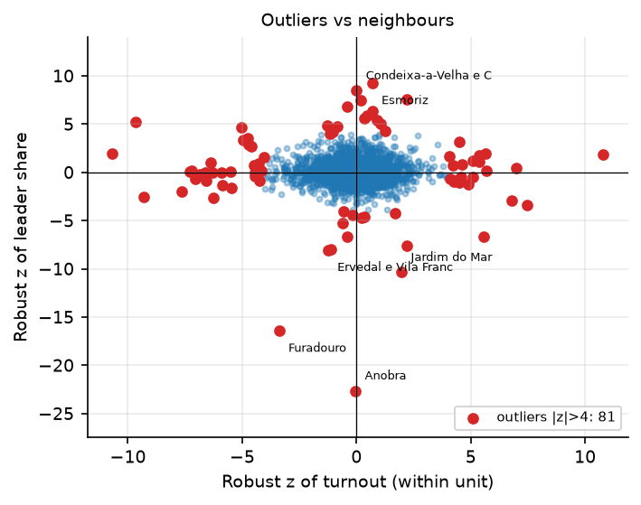
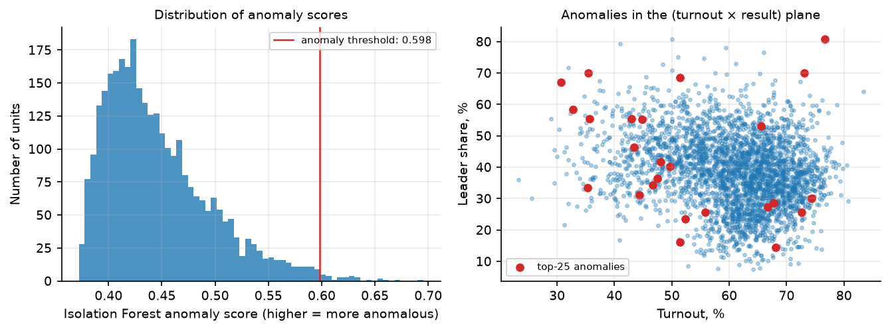
Did turnout and AD’s share jump together since 2024?
No parish had both turnout and AD’s share rise by more than 15 percentage points.
I checked for parishes where turnout and AD’s share both rose sharply, which can be a warning sign. Across the same 3,092 parishes in 2024 and 2025, none rose by more than 15 percentage points on both measures. The changes seen are consistent with changes in party alliances; this comparison alone cannot explain every local change.
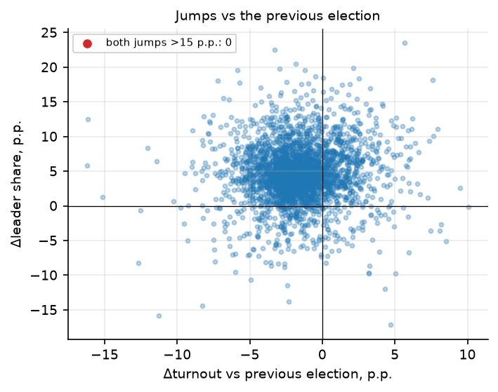
Do local tally sheets add up to the official totals?
In six municipalities, 91 polling-station totals matched every party’s official total exactly. The arithmetic also checked out, with no duplicate sheets. This covers 60,711 registered voters, just 0.66% of the electorate.
Six municipalities publish official polling-station tally sheets: 91 stations covering 60,711 registered voters, or 0.66% of the electorate. Their totals match every list’s official totals exactly. All 91 sheets add up: party votes + blank + invalid ballots = ballots cast; ballots cast + abstentions = registered voters. No two sheets have identical results. The coverage is limited: with only 91 sheets, the self-test failed to detect changes to about 9% of sheets using the round-number check. This is a small spot check, not a nationwide polling-station audit.
Can the checks detect changes I deliberately add?
The checks responded to simulated manipulation: the Shpilkin estimate rose ×18 and the round-number score rose from z = 0.2 to 5.1. This confirms sensitivity to these examples.
I tested the tools by changing copies of the data from the same 3,092 parishes. Adding 131,629 AD ballots in 10% of parishes, raising turnout by 5–35 percentage points, increased the unusual-zone estimate from 14,589 to 255,496 votes (×18). Rounding turnout to whole percentages in 5% of parishes raised the round-number score from z = 0.2 to 5.1. Both changes were detected. This shows the checks can detect these examples, not every possible manipulation.
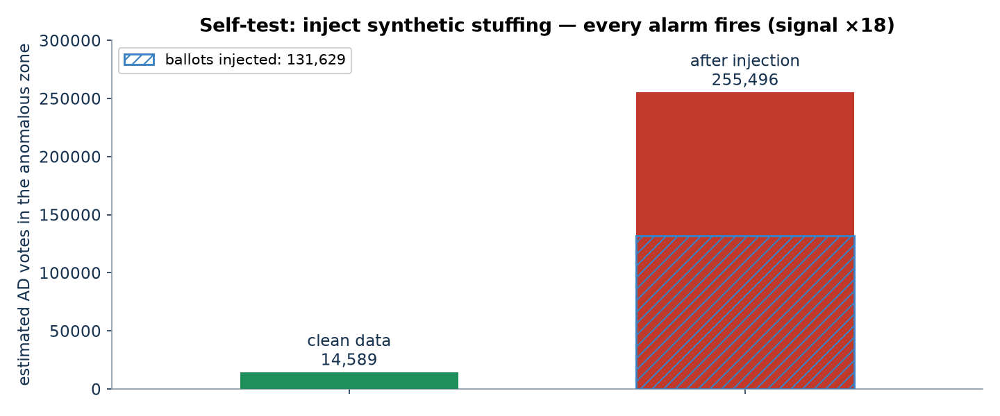
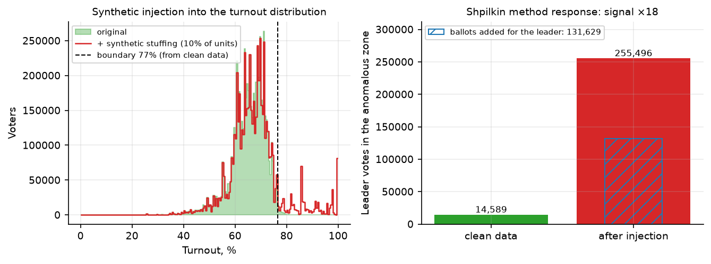
Data, sources and how to repeat the checks
- Source: official results portal of the Ministry of Internal Administration at eleicoes.mai.gov.pt — parish-level export, 3,092 territories (mainland, Madeira, Azores).
- I checked that parish totals match the national totals exactly. Polling-station totals in the six municipalities with published sheets also match the official totals exactly.
- I used publicly available Python code (pandas / scikit-learn), including checks developed by Shpilkin, Klimek, Kobak, Beber–Scacco and others.
- Reproduce and inspect: analysis-tool, paradox analysis and the project repository.